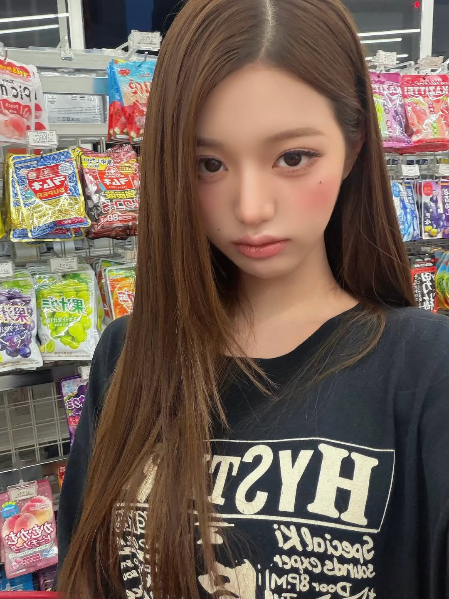
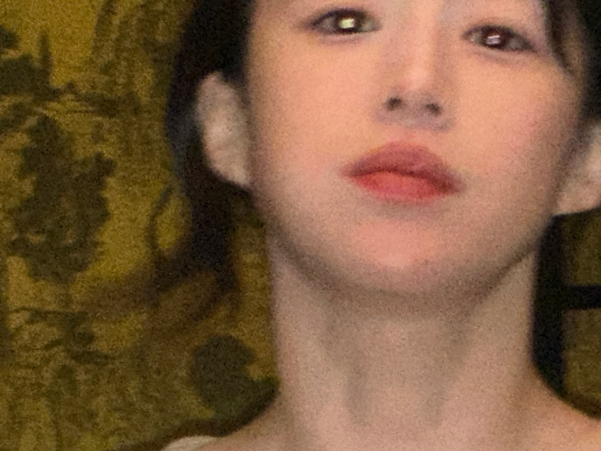
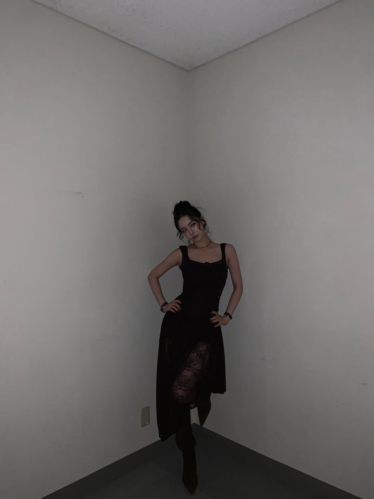
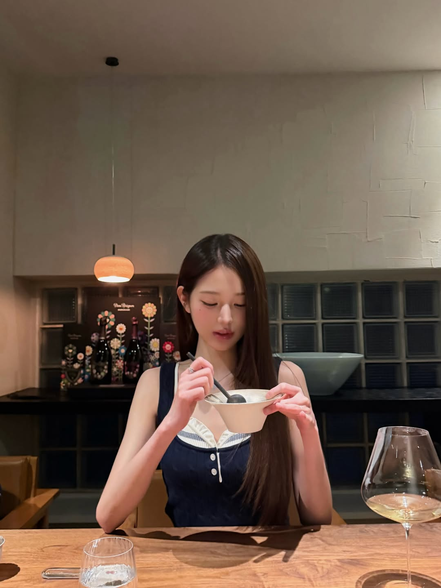
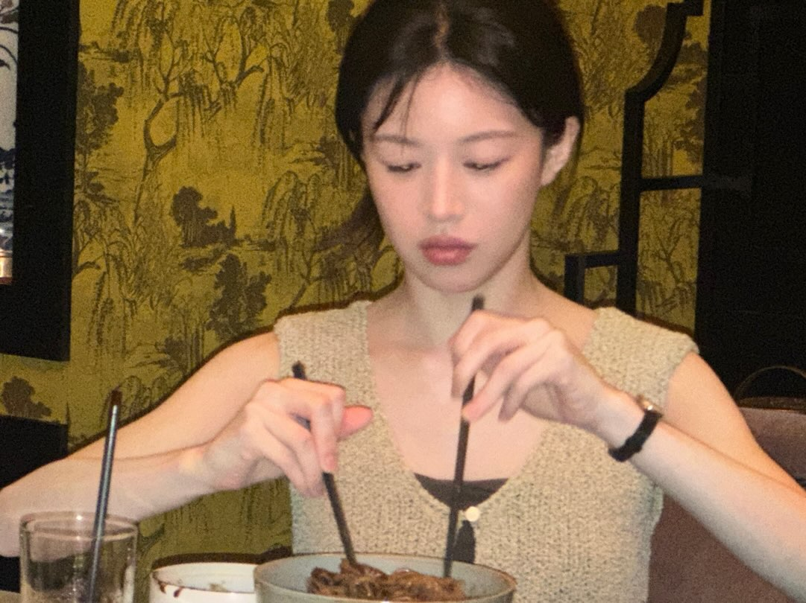
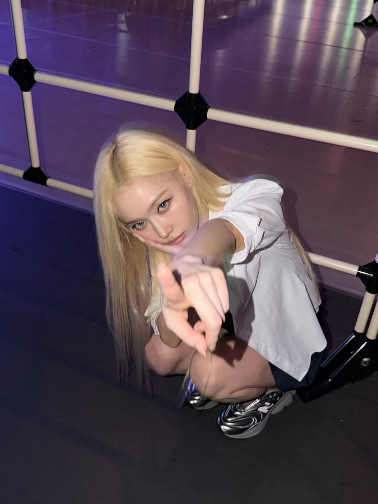
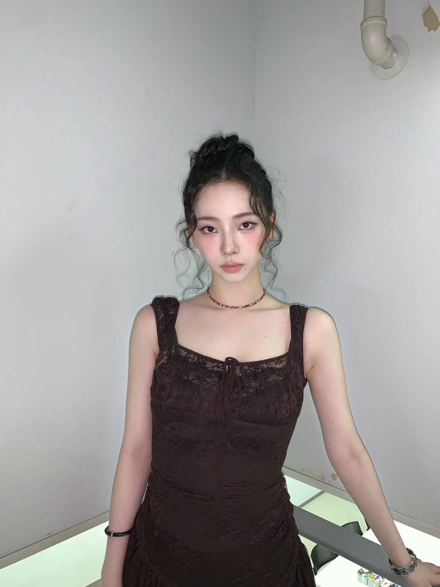
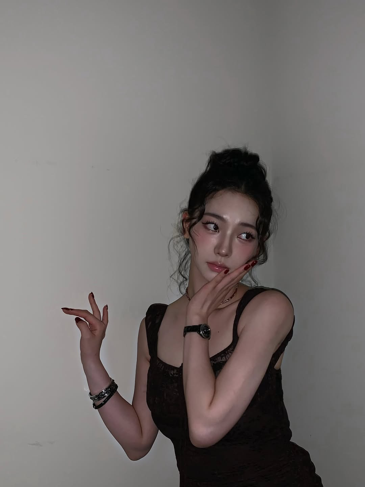

Brief bằng lời thường
“Tôi bán bún bò, muốn menu hiện đại cho khách văn phòng.” Không cần viết brief chuẩn.
product-brief.mdMột skill nối marketing, content và art direction thành cùng một hệ thống. Bạn gửi sản phẩm, mục tiêu và ảnh tham chiếu; Marketing-Minthep trả chiến lược, copy, prompt, hình ảnh và asset plan có thể triển khai.
Chọn một mục tiêu. Skill tự route đúng kiến thức và chỉ tạo bộ đầu ra cần thiết, thay vì đổ mọi thứ vào một câu trả lời khổng lồ.
RECOMMENDED ROUTE
Biến một product truth thành campaign idea, ba creative lane và hệ asset xuyên suốt paid, social, landing page.
FOR NON-MARKETERS
Chỉ cần nói bạn bán gì, muốn đạt điều gì và gửi ảnh/ref nếu có. Skill sẽ tự hỏi phần còn thiếu, giải thích quyết định bằng ngôn ngữ dễ hiểu rồi tạo báo cáo Markdown để bạn dùng tiếp.
“Tôi bán bún bò, muốn menu hiện đại cho khách văn phòng.” Không cần viết brief chuẩn.
product-brief.mdNhận 2–3 hướng chiến lược, moodboard, màu sắc, bố cục và trade-off trước khi làm sâu.
direction-options.mdCopy, wireframe, shot list, prompt hình/video, lịch nội dung và checklist QA nằm trong một thư mục.
campaign-report.mdNăm output demo cho thấy cùng một skill có thể chuyển giữa packshot, beauty, art campaign, fashion và menu mà vẫn giữ logic sản phẩm, bố cục và mục đích kênh.
Các hình trên là concept hư cấu để minh họa art direction. Ba menu là cùng một nội dung, dựng bằng render_mockup.py, chỉ đổi hướng thiết kế — lề, cỡ chữ tiêu đề, giãn dòng và cách xử lý dòng món đều khác nhau, không chỉ đổi màu. Giá và thành phần cố ý để trống; đây chưa phải file in đã duyệt.
Skill biến những điều bạn nói bằng cảm giác thành một production contract rõ ràng: ảnh nào khóa identity, ảnh nào chỉ pose, ánh sáng nào được giữ và biến thể nào đáng thử.
Sản phẩm, audience, kênh, điều phải giữ và điều muốn tránh.
Mỗi ảnh nhận một nhiệm vụ, độ ưu tiên và lock riêng.
Mỗi nhánh chỉ đổi một trục: crop, light, action hoặc styling.
Loại sai identity, product, anatomy, physics, claim hoặc rights.
 eye shape + spacing
nose geometry
jaw + chin
lip geometry
eye shape + spacing
nose geometry
jaw + chin
lip geometry
IDENTITY-PRESERVING EDIT
Khi bạn gửi ảnh chính người cần chỉnh, output phải giữ đúng cấu trúc khuôn mặt và nhận dạng. Một phiên bản “đẹp tương tự” vẫn là lỗi.
Đính kèm ảnh ref, thay phần trong ngoặc vuông và gọi skill. Nếu một quyết định quan trọng còn thiếu, skill chỉ hỏi tối đa ba câu.
Use $marketing-minthep in system mode.
Product: [what you sell]
Goal: [launch / sell / educate / PR]
Audience: [who needs it]
Channels: [web / social / paid / marketplace]
Map my attached references by role, build the recommended direction,
create four controlled visual branches, and return copy, asset plan,
provider-ready prompts, QA gates, and the next decision.Skill đã tương thích global với Claude Code và GPT/Codex. Mở phiên mới rồi gọi cùng một tên skill.
~/.claude/skills/marketing-minthepGlobal skill~/.codex/skills/marketing-minthepGlobal skill$marketing-minthepDùng để học pose, makeup, crop và ánh sáng — không sao chép identity và không ngụ ý endorsement.

candid · full body editorial · pose
makeup · detail makeup · phone-like
pose · full body
action · candid
candid · warm light
pose · high angle editorial · texture
makeup · bright portrait
pose · expressionGPT Image 2 cho direct generate/edit và conversational refinement. Nano Banana phù hợp nhiều reference, consistency và production phức tạp. Luôn kiểm tra tài liệu live trước khi gọi API.
Không bịa claim, thông số, review, giá, chứng nhận hoặc endorsement. Celebrity references chỉ được tách thành pose, makeup, light và composition.
Mọi output phải qua fidelity, anatomy, physics, truth, channel và rights gate trước khi được chọn.